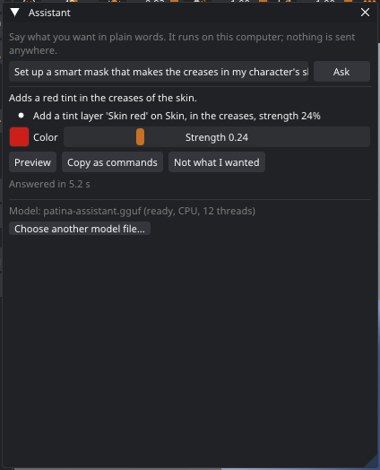
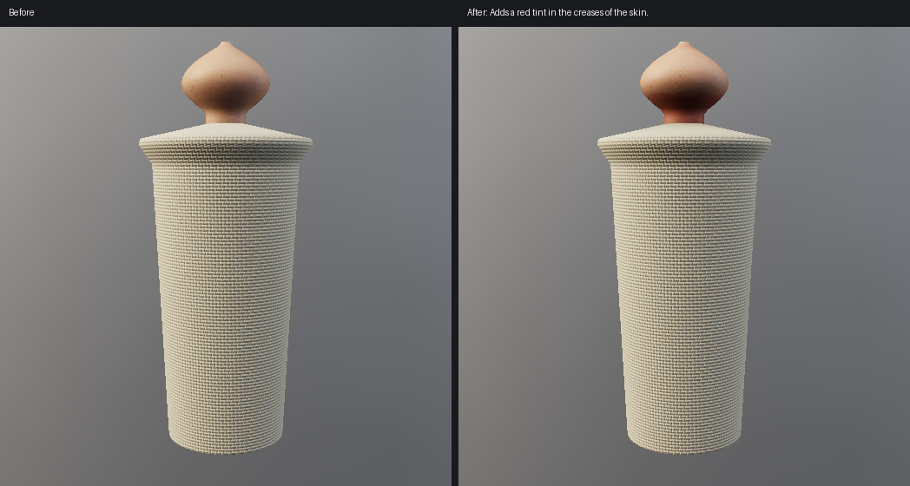
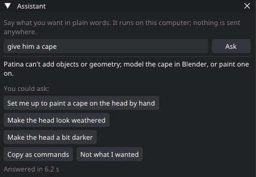
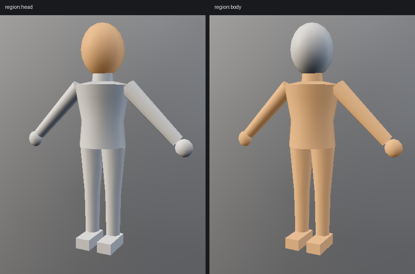
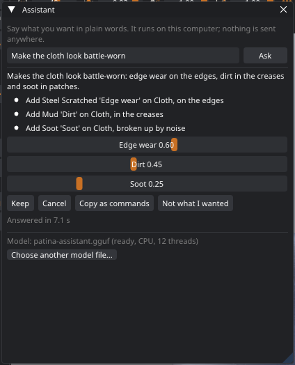
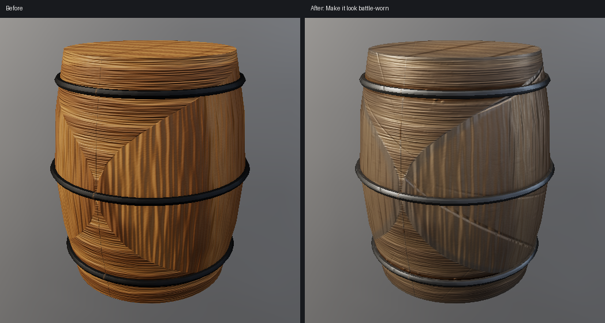
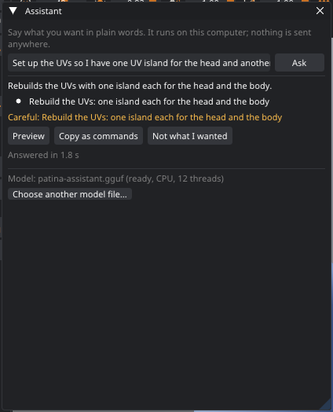
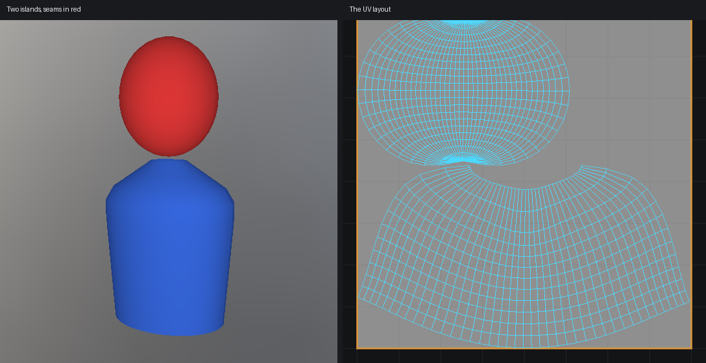

Patina Assistant
Patina 0.11 adds an assistant you talk to in plain words: "make the creases of the skin slightly redder", "one UV island for the head and another for the body". A small model running on your own computer turns the request into Patina commands, shows you what it will do, and does it as one step you can undo. Nothing is sent anywhere, and there is no account or key.
Getting the model
The model is a separate download, so Patina itself stays small. It is one file, patina-assistant-1.7b-q4_k_m.gguf
(1.1 GB). Download it from the link given with this Patina release, then in Edit › Preferences › Features, under
Patina Assistant, click Choose model file... and pick it. Patina copies it into its own folder
(~/.local/share/patina/user/models on Linux, %LOCALAPPDATA%\Patina\user\models on Windows) and checks
it. The line under the button then says where the model runs: on the graphics card, or on the processor.
The file's SHA-256 is c0105bb18bceb516259312df7fc2a3e6ca45a8ccbadad5eefd1f6b214c89e9e0. If Patina doesn't recognize a file, it still uses it and says so.
Asking
- Open Window › Assistant, or type into the command palette (Ctrl+Shift+P): when nothing matches, the last row offers Ask the Assistant.
- Type what you want and press Enter. The answer takes about a second on a recent graphics card and a few seconds on the processor alone.
- The Assistant says in one sentence what it will do, and lists the steps in plain words. Steps that delete a layer, clear paint or rebuild the UVs have a Careful line.
- Preview runs the plan, so you see the real result in the viewport. Keep keeps it; Cancel takes it back. While previewing, the Strength slider (and the Color of a tint) adjusts the result directly, without asking again.
Everything a request does is one undo step, named after it in the history: Ctrl+Z takes back the whole request. Requests that only change the view, the camera or the brush, or open a window, run at once.
A few requests change something Patina can't undo: a texture set of its own for a part, the texture resolution, and the texture set layout (each of them clears the undo history). Their plan has no Preview; Do it runs it, and says first that it can't be undone.


With an empty request box, the panel shows examples made from your model's own part names; click one to fill the box. Your recent requests are listed under them.
Follow-ups
The Assistant remembers what the last request made, so you can carry on: "a bit stronger", "less red", "only on the face", "do that everywhere", "put it on the edges instead", "put it on the boots too", "rename it to Base", "hide it for now", "actually, remove that".
When it asks back
If a request is unclear, or names a part the model doesn't have, the Assistant asks a question instead of guessing. The parts it can see appear as buttons under the question: hover over one to see its faces, click it to answer. A vague request ("make it look better") gets a few ideas for your model as buttons too.
When it can't
Some things are outside Patina: changing the shape of the model, adding objects, animating or posing it, painting artwork for you, making video, uploading. The Assistant says so in one sentence instead of doing something else that sounds similar, and offers up to three close things it can do, as buttons: "give him a cape" gets an offer to set you up to paint a cape by hand, and a few changes to his parts; click one to ask for it.

Parts of the model
Requests name parts the way you would: the jacket, the left arm, the head. The Assistant knows the parts Patina finds
(mesh_parts lists them):
- Material slots, by name: Skin, Jeans, Boots_Leather...
- Vertex groups sent from Blender (vertices with a weight of 0.5 or more): Head, Arm.L...
- Pieces: separate parts of the mesh, largest first, when no slot or group already names them.
- The head and the body, found from the shape: Patina looks for a neck, a narrow ring between a wider head and wider shoulders. It looks again under long hair. If there is no neck (a prop, a creature with no clear neck) there is no head part, and the Assistant asks which part is the head.
- The selection: select faces with the Island brush or the Select tool and say "make these rusty".
A part from a material slot or vertex group is the surest; name your slots and groups and the Assistant (and Auto texture) can find them.

What it can do
The Assistant sets things up; you finish them. Most requests leave layers with a Strength slider each, so you tune the result by hand instead of hunting for settings.
- Whole looks in one go: "make the armor look battle-worn", weathered, rusty, abandoned, muddy, burnt, snowy, overgrown, dusty, grimy. A look is a folder of weathering layers (dirt in the creases, dust on top, wear on the edges...), one slider each. "Slightly" or "very" sets how strong it starts.
- Several things at once: "make the jacket black leather, the jeans denim and put mud on the boots".
- Getting ready to paint by hand: "I want to paint scratches on the helmet" adds a paint layer that only shows on the helmet, and picks the material, the brush and the Paint tool.
- Adjustments: "make the jacket a bit darker", lighter, more or less saturated, more contrast, rougher, glossier. Each is an adjustment layer limited to the part, so it can be undone or tuned at any time.
- Tints and materials limited to a part and to a smart mask: creases, edges, sheltered places, where dust settles, toward the bottom, in patches. Materials can have a color: "red leather". A region can leave a part out: "dirt everywhere except the face".
- Wear, dirt, dust, rust, moss, snow and soot, and the smart materials, on the whole model or one part.
- The selection: select faces and say "make these gold" or "give these their own UV island".
- UVs: one island per part, unwrapping or relaxing a part, packing, texel density, mirroring, fixing overlaps.
- Baking AO, curvature and thickness.
- Layers, by name or by what they are: "turn the rust down", "hide the dirt and the grime", rename, opacity, blend mode, move, duplicate, delete, put in a folder.
- The brush, the paint material or color, the tool, the view mode, the camera and symmetry. The Assistant knows how the brush is set now, so "a bit bigger", "softer", "less flow", "smooth my strokes" (lazy mouse) and "keep my strokes on one island" work.
- "Make it look clean again" hides the weathering layers (dirt, dust, grime, rust, moss, soot, snow, edge wear); "remove all the weathering" deletes them.
- Texture sets (new in 0.12): "split the head into its own texture map", "put the head on a separate UV map", "put the head on a new UDIM tile" give the part a texture set of its own. "One texture per material" and "put everything back on one texture" switch the layout, and "make the textures 4K" sets the resolution.
- Texture space for a part: "give the head more texture space" (or "twice the texel density", "less UV space for the body") scales the part's islands and packs the layout again, so the part gets more of the texture without a texture set of its own.
- Glow: "make the visor glow blue" adds a layer that lights the part up in that color (emissive). Adjustments include "more metallic" and "less metallic".
- Text to paint through: "write VALOR on the shield" puts the letters over the view as a stencil, with a paint layer on that part and the Paint tool ready; paint over the letters.
- Selections: "select the head faces", "also select the boots", "invert the selection", "clear the selection".
- The right window: "export the textures for Unreal" opens the export window set up for Unreal; "render an image", "check the symmetry", "bake from my high poly", "send it back to Blender", "show me the shortcuts" open theirs. You choose the folder and press the button.
- Questions about the model: "how many faces is this?", "which parts can you see?", "what layers do I have?", "how big are the textures?".


It doesn't open, save or write files itself, or send anything to Blender: it opens the window where you do that. It doesn't add or reshape geometry, animate, or paint artwork for you (see When it can't). Ask "what can you do?" for a short summary and a few ideas for your model.
One island per part
"One UV island for the head and another for the body" runs uv_island_per_part. Each part is cut along
its border and unwrapped on its own. A part that is closed or a tube (a whole head, a torso) gets a cut down its back, and a
part with limbs gets cuts from the hands and feet along the back of the arms and legs. That is how you would cut a
character by hand. It is then relaxed (LSCM, then as-rigid-as-possible) and everything is packed. A part made of separate
pieces (eyes, teeth, lashes) gets an island per piece. The command reports the stretch of each part.
A whole body as one island is hard to lay flat: the arms and legs can end up on top of the torso, and layered hair on top of itself. Then two spots share the same texture. When that happens, the Assistant says so under the plan. For a cleaner layout, make more islands: paint an arm, a leg or a strand of hair with the Island brush (L) and press Enter.


When it gets it wrong
Cancel, and try other words. Not what I wanted saves the request, the plan and a note of what you meant to
~/.local/share/patina/user/assistant/feedback.jsonl. It stays on your computer; it's there if you want to
help make the next model better. Copy as commands copies the plan's commands, to paste into the console or a
script.
From scripts and Claude
The same commands are available to scripts, the HTTP API and MCP:
assistant_ask {request}: the plan for a request, checked but not run.assistant_apply {plan, request}: runs a plan as one undo step. A step that fails undoes the ones before it.assistant_check {plan}: the steps in plain words and the warnings.assistant_panel {request, preview}: opens the Assistant window in the desktop app and asks there; withpreviewthe plan is previewed as soon as it arrives, waiting for Keep or Cancel.assistant_model {action: load | unload | status},assistant_context {request},assistant_grammar.- The commands plans use are ordinary commands too:
mesh_parts,select_part,add_tint_layer,add_material_layer,update_layer_mask,uv_island_per_part, andapply_smart_materialwith a region.
A plan is JSON: {"say": "...", "steps": [{"cmd": "...", "args": {...}}]}. "$0.index" in a step
stands for the index that step 0 returned. With the macro recorder running, a request is recorded as its
steps, so it replays without the model.
Switching it off
Edit › Preferences › Features › Patina Assistant. Switched off, the window, the palette row and the Assistant's commands disappear. Without a model file it does nothing at all.